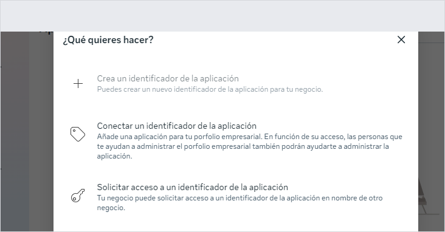
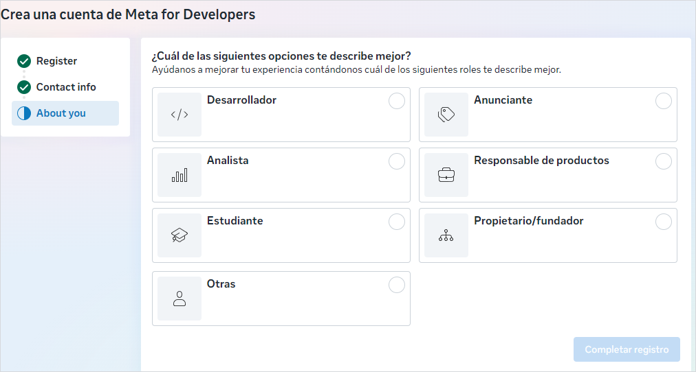
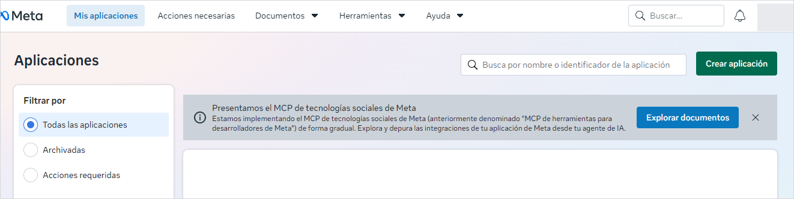
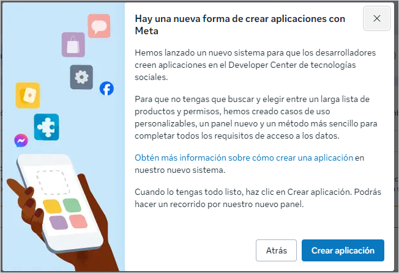
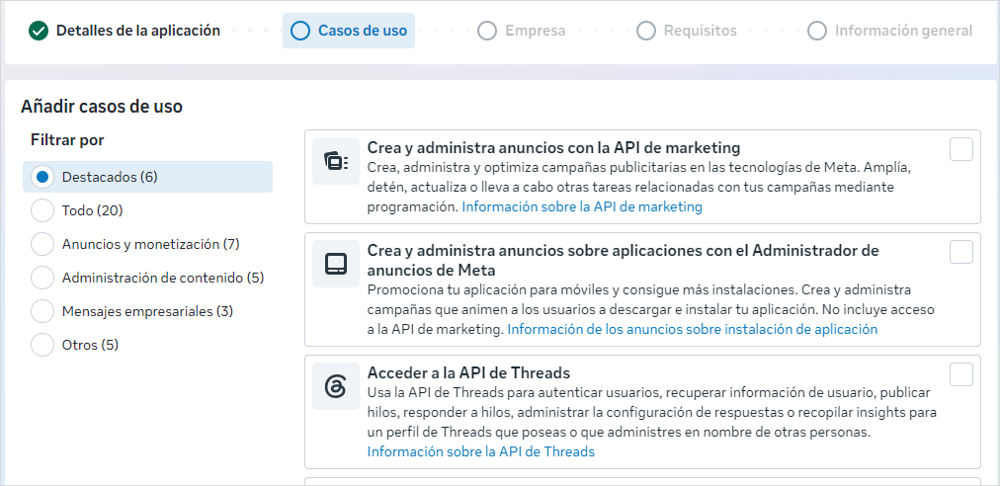
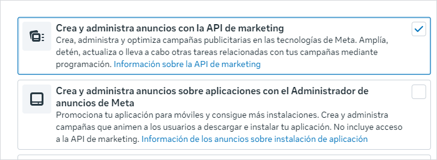

Para que Nova traiga sola el gasto de tus anuncios cada día, hay que darle
una llave de lectura. Se hace una sola vez y toma unos veinte minutos.
Antes de empezar, lo que importa
✓Nova va a poder leer cuánto gastaste, en qué conjunto y con qué resultados.
✕No va a poder crear anuncios, pausarlos, cambiar presupuestos ni gastar un peso.
✕No va a poder ver tus mensajes, tus contactos ni tus páginas.
✓Puedes quitarle el permiso cuando quieras, desde tu propio panel de Meta y sin avisarle a nadie.
Paso 0
Dónde vive tu cuenta publicitaria
Meta guarda las cuentas publicitarias dentro de algo que llama
portfolio empresarial (antes se llamaba Business Manager).
Todo lo que sigue hay que hacerlo dentro del portfolio donde están tus
cuentas — no en otro.
Entra a business.facebook.com y mira la lista de cuentas
publicitarias. Ahí vas a ver el identificador de cada una: un número largo.
Anótalos. Nova los necesita al final para saber cuál cuenta
es cuál.
Si usas más de un perfil
Mucha gente tiene un perfil personal y otro de trabajo, cada uno con su
propio portfolio. Usa aquel donde aparecen las cuentas con gasto
real. Si te equivocas de perfil, vas a llegar hasta el final y la
llave no podrá leer nada — y el error no te lo dirá nadie hasta ese momento.
Si tienes dos tiendas
Si las dos cuentas publicitarias están en el mismo portfolio,
una sola llave sirve para las dos. Si están en portfolios distintos, hay que
repetir esta guía en cada uno.
Paso 1
Registrarte como desarrolladora
Meta solo entrega llaves a través de una aplicación. Y para
crear una aplicación hay que tener cuenta de desarrollador. No te asustes con
la palabra: es un registro gratuito de cinco minutos, no hay que programar
nada.
Desde tu portfolio: Configuración → Aplicaciones → + Añadir.
Se abre esta ventana:

La primera opción — Crea un identificador de la aplicación — aparece
en gris. No está rota: está bloqueada porque todavía no eres
desarrolladora.
El truco que no está escrito en ninguna partePasa el mouse por encima de la opción gris, sin hacer clic.
Aparece un botón “Confirmar cuenta” a la derecha de esa línea.
Ese botón es el que te lleva al registro.
Meta te va a pedir confirmar que hay una persona real detrás: un celular con
código por SMS, o una tarjeta solo para verificar identidad —
no cobra nada. Después te pregunta qué haces:

Elige la que sea verdad en tu caso. Esta respuesta es solo para las
estadísticas de Meta: no cambia ningún permiso ni lo que vas
a poder hacer después.
Paso 2
Crear la aplicación
Una “aplicación” de Meta no es un programa. Es un registro, un papel. Existe
solo para que Meta sepa a nombre de quién emite la llave. No hace nada por su
cuenta y nadie más la ve.
Ya registrada, entra a:
developers.facebook.com/apps

Botón verde Crear aplicación, arriba a la derecha.
Puede salirte un anuncio sobre una forma nueva de crear aplicaciones:

Ciérralo con la X. Detrás está el formulario que necesitas.
El botón azul de ese aviso te manda por otro camino.
Los datos que pide
Nombre:Nova
Correo de contacto: el del negocio, no el personal. Ahí
es donde Meta va a avisarte si algo pasa con la llave.
Casos de uso
Después pide elegir para qué es la aplicación:

Son varios, pero solo uno sirve.

Marca “Crea y administra anuncios con la API de marketing”.
La de abajo es para promocionar aplicaciones de celular y su propia
descripción dice que no incluye acceso a la API de marketing.
El nombre asusta más de lo que hace“Crea y administra anuncios” suena a que le estás dando
control de tu pauta. No es así. Este paso solo decide qué herramientas quedan
disponibles. Lo que la llave puede hacer se decide en los pasos 4 y 5,
y ahí vas a encender únicamente lectura.
El paso donde más gente se equivoca
Cuando pregunte por el portfolio empresarial, elige el del
paso 0 — donde están tus cuentas publicitarias. Si lo dejas en blanco o eliges
otro, la llave se va a generar igual pero no podrá leer nada.
Paso 3
Crear el usuario de sistema
Un usuario de sistema es un usuario que no es una persona. Existe para que la
conexión no dependa de que tú tengas la sesión abierta, ni se caiga el día que
cambies de contraseña.
En business.facebook.com → Configuración del negocio
Menú izquierdo: Usuarios → Usuarios del sistema
Agregar → nombre: Nova → rol: Empleado
No necesita ser administrador. Empleado alcanza y es lo correcto: cuanto
menos pueda, mejor.
Paso 4
Darle tu cuenta publicitaria, solo lectura
Este es el primero de los dos candados.
Con el usuario Nova seleccionado:
Agregar activos
Pestaña Cuentas publicitarias
Marca tu cuenta — o las dos, si tienes dos tiendas en este portfolio
Enciende únicamente “ver rendimiento”
Guardar cambios
No enciendas esto“Administrar campañas” le daría permiso de escritura. Nova no
lo necesita y no debería tenerlo. Si algún día una herramienta te pide ese
permiso para “solo leer”, desconfía.
Paso 5
Generar la llave
El segundo candado, y el último paso dentro de Meta.
Con el usuario Nova todavía seleccionado:
Generar nuevo token
Elige la aplicación que creaste en el paso 2
En la lista de permisos marca ads_read — solo ese
Generar
Cópiala antes de cerrar
Meta muestra la llave una sola vez. Si cierras la ventana sin
copiarla, no se puede recuperar: hay que generar otra. No pasa nada grave, pero
es repetir el paso.
Paso 6
Pegarla en Nova
En Nova: Configuración → Meta. Pega la llave y el
identificador de la cuenta que anotaste en el paso 0, y dale a
Probar conexión.
Nova hace una consulta de prueba ahí mismo y te dice qué encontró. Si algo
está mal, te dice cuál de los dos falla — no un error genérico.
Desde ese momento, Nova trae el gasto del día anterior cada mañana, sola.
No vuelves a bajar un Excel de Meta.
Si algo no sale
Los menús de Meta cambian de nombre cada tanto y las traducciones al español
no siempre coinciden con lo que dice esta guía. Si una pantalla no se parece a
la captura, no toques nada y pregunta.
Lo que pasa
Qué suele ser
La opción de crear aplicación está en gris
Falta el registro de desarrollador. Pasa el mouse por encima y sale Confirmar cuenta.
developers.facebook.com da vueltas sin entrar
El navegador tiene abierto otro perfil de Facebook. Entra con el perfil que administra el portfolio.
La llave se genera pero Nova dice que no ve la cuenta
Falta el paso 4: el usuario de sistema no tiene la cuenta asignada.
Nova dice que el permiso no alcanza
En el paso 5 se marcó otro permiso, o ninguno. Genera otra llave con ads_read.
Funcionaba y dejó de funcionar
Meta revoca llaves de aplicaciones que llevan 180 días sin usarse. Se repite el paso 5.